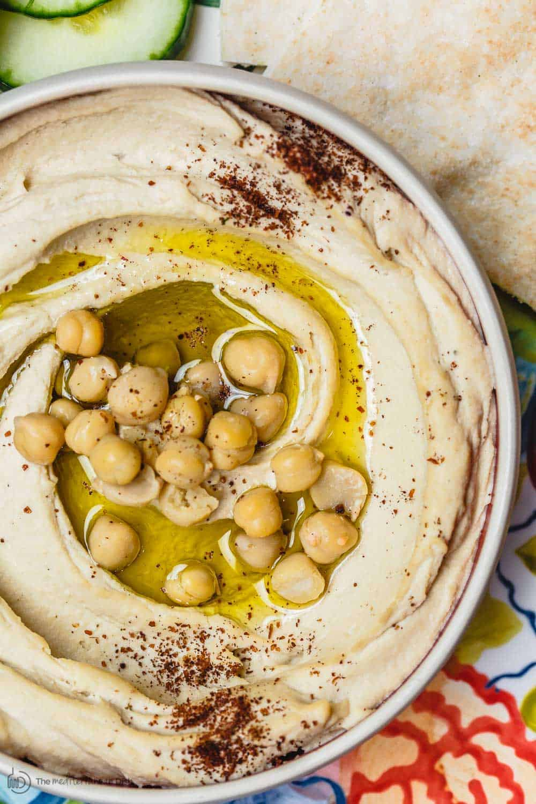

Creamy Hummus Recipe

Description
Authenitc, creamy dreamy home-made hummus just like your favorite abi or abla would make in Turkey.
Ingredients
- 1 can (15 oz.) chickpeas (garbanzo beans)
- 1/2 cup tahini
- 1/4 cup fresh lemon juice
- 1/4 cup spring water
- 5 cloves of garlic
- 2 pinches of sea salt
- Extra virgin olive oil, to top
- Water
Steps
- Blend the tahini, lemon juice and water in a food processor or blender until it becomes creamy, fluffy and white (this is the secret).
- Add in the garlic and salt and blend some more.
- Add in a handful of washed garbanzo beans and blend again until smooth.
Continue adding in garbanzos until you get a nice smooth hummus but not to many as to turn it into a more yellow garbanzo mash.
- Add water in small increments until it's perfect for you.
DO NOT try and put all ingredients in at once and blend or you will get the more yellowish garbanzo mash.
THE SECRET is CREAMING the tahini and lemon juice/water first.
- Serve topped with EVOO, fresh cracked pepper, paprika, whatever you wish.
Main Page